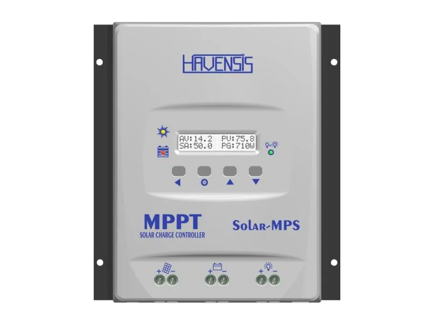
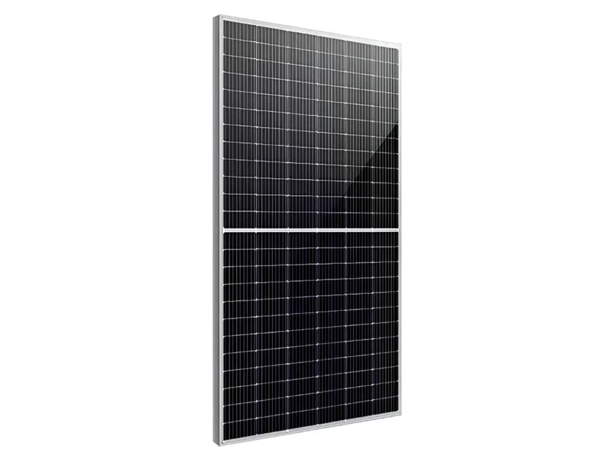

Bağ evi ve yayla evi
Paneli aküye bağlar; aydınlatma ve ev cihazları aküden, inverter üzerinden çalışır. Şebeke hattı çekmeden elektrik.

12/24 V akülü güneş sistemleri için 60 A MPPT şarj kontrol cihazı: 2500 W'a kadar panel bağlanır, aküyü 60 A ile şarj eder. 20 A yük çıkışı, gece-gündüz ve zaman ayarıyla aydınlatmayı kendi yönetir.
₺11.800 ≈ $240
KDV dahil fiyattır.
💰 Havale/EFT ile: ₺11.450
Havensis Solar-60AMPS-100, MPPT serisinin (MPS) 60 A'lik şarj kontrol cihazıdır. Model kodundaki 100|60, cihazın en fazla 100 V panel girişi ve 60 A şarj akımıyla çalıştığını anlatır. 12 V ve 24 V akülerle kullanılır; 2500 W'a kadar güneş paneli bağlanabilir.
MPPT (maksimum güç noktası izleme), panelin o anki ışıkta verebileceği en yüksek gücü bulur ve aküye aktarır. Panel gerilimi akü geriliminden yüksek olduğunda aradaki farkı ısıya harcamaz, şarj akımına çevirir. Bu yüzden MPPT'li cihaz, basit PWM cihazlara göre aynı panelden daha fazla enerji toplar.
Üreticinin verilerine göre cihaz %98 dönüştürücü verimi ve %99,6 MPP izleme verimiyle çalışır: panelden gelen enerjinin yalnızca küçük bir kısmı ısıya dönüşür.
LCD ekran ve LED göstergeler sistemin durumunu gösterir. Tüm parametreler ayarlanabilir: şarj değerlerini akünüze göre cihazın tuşlarından girersiniz. Cihaz panelden beslenebilir ve akü bağlı değilken de çalışabilir.
Alt kısımda panel, akü ve yük için üç çift bağlantı klemensi vardır. 20 A yük çıkışına bağlanan aydınlatma ve DC cihazlar gece-gündüz fonksiyonuyla otomatik yönetilir: lambalar hava kararınca yanar, zaman ayarıyla ne kadar açık kalacaklarını belirlersiniz.
Cihaz, Havensis tarafından Türkiye'de üretilir. Türkiye'nin her yerine kargo ile gönderiyoruz; Antalya bölgesinde isteğe bağlı yerinde kurulum yapıyoruz.
| Marka | Havensis |
| Model | Solar-60AMPS-100 (100|60) |
| Akü gerilimi | 12/24 V |
| Şarj akımı | 60 A |
| Yük çıkış akımı | 20 A |
| Maks. panel giriş gerilimi | 100 V |
| Maks. panel gücü | 2500 W |
| Şarj yöntemi | Gelişmiş MPPT algoritması |
| Dönüştürücü verimi | %98 |
| MPP izleme verimi | %99,6 |
| Gösterge | LCD ekran ve LED durum göstergesi |
| Ayarlar | Tüm parametreler ayarlanabilir |
| Yük kontrolü | Gece-gündüz ve zaman ayar fonksiyonu |
| Besleme | Panelden beslenir, aküsüz çalışabilir |
| Cihaz boyutu | 197,2 × 224 × 80 mm |
| Üretim | Yerli üretim (Türkiye) |
Değerler üreticinin (Havensis) ürün listesinden alınmıştır. Listede olmayan bir değeri merak ediyorsanız bize yazın; üreticiden teyit edelim.
MPPT ve panel dizisi (seri bağlama) nedir? GES Sözlüğü →
Şebekenin olmadığı ya da istenmediği her yerde paneli aküye bağlayan cihazdır.
Paneli aküye bağlar; aydınlatma ve ev cihazları aküden, inverter üzerinden çalışır. Şebeke hattı çekmeden elektrik.
Tavandaki panellerle 12/24 V yaşam aküsünü kampta ve yolda doldurur; kompakt gövdesi dar alanlara sığar.
Gece-gündüz fonksiyonu yük çıkışındaki lambaları hava kararınca yakar, zaman ayarıyla söndürür; ayrıca sensör ya da zaman saati gerekmez.
Tarla, şantiye ve depo gibi uzak noktalardaki güvenlik kamerası, modem ve ölçüm cihazlarını şebekeden bağımsız besler.
Güneş paneli cihaza, cihaz aküye bağlanır; ev cihazları aküden, inverter üzerinden çalışır.
💡 Yük çıkışı (20 A): DC aydınlatma ve küçük cihazlar doğrudan cihaza bağlanır, gece-gündüz fonksiyonuyla otomatik yanar.
Cihazı önce aküye bağlayın ve arasına uygun bir sigorta koyun; kutupları (+ / −) doğru eşleştirin.
Akünüzün tipine ve gerilimine göre şarj değerlerini LCD ekrandan, cihazın tuşlarıyla girin.
Panel dizisinin açık devre gerilimi (Voc) 100 V'u aşmamalı; soğuk havada Voc yükseldiği için pay bırakın.
DC aydınlatmayı 20 A yük çıkışına, inverteri doğrudan aküye bağlayın. Sökerken önce panelleri ayırın.
Seçimi akü geriliminiz ve bağlayacağınız panel gücü belirler.
| Model | Akü | Şarj akımı | Panel girişi | Panel gücü | Verim | Boyut |
|---|---|---|---|---|---|---|
| Solar-30AMPS (100|30) | 12/24 V | 30 A | 100 V | 1200 W | %98 | 159 × 210 × 70 mm |
| Solar-60AMPS-100 (100|60) Bu ürün | 12/24 V | 60 A | 100 V | 2500 W | %98 | 197,2 × 224 × 80 mm |
| Solar-60AMPS 150|60 | 12/24/36/48 V | 60 A | 150 V | 5000 W | %97,5 | 280 × 235 × 100 mm |
Seri bağlanan panellerin açık devre gerilimleri (Voc) toplanır; toplam, cihazın panel giriş sınırının altında kalmalıdır.
| Panel | Voc (künye) | Bu cihazda en fazla seri |
|---|---|---|
| Lexron 285 W Güneş Paneli | 42,84 V | 2 panel (85,68 V) |
| Lexron 655 W TOPCon Güneş Paneli | 50,34 V | Seri bağlanmaz: tek ya da paralel |
Voc soğukta yükselir; kışın −10 °C'nin altına düşen bölgelerde dizilimi bizimle kontrol edin. Toplam panel gücü 2500 W'ı aşmamalıdır.
Aynı siparişte alın; hepsi aynı kargoyla gelsin.

Kompakt TOPCon panel; bu cihaza en fazla 2 tanesi seri bağlanır.
₺7.500Sepete ekle →
Yüksek güçlü TOPCon panel; bu cihaza tek ya da paralel bağlanır.
₺10.000Sepete ekle →
Panel ile cihaz arası: 5 m siyah + 5 m kırmızı.
₺1.000Sepete ekle →
Panel kablosunu solar kabloya bağlar.
₺100Sepete ekle →Hayır, şarj gücünü akü gerilimi ve 60 A şarj akımı belirler. 12 V akü sisteminde yaklaşık 60 A × 14 V ≈ 840 W, 24 V sistemde yaklaşık 1680 W şarj gücü elde edilir. 2500 W'a kadar panel bağlanabilir; panel gücü bunu aştığında cihaz akımı 60 A'de sınırlar, fazla panel ise sabah, akşam ve bulutlu havada şarjı artırır.
12 V ve 24 V akülerle. Tüm parametreler ayarlanabildiği için şarj değerleri akünüzün üreticisinin verdiği değerlere göre girilir. Lityum akü kullanıyorsanız akünüzün şarj değerlerini bize yazın; sipariş öncesi birlikte kontrol edelim.
Seri bağlı panellerin açık devre gerilimi (Voc) toplamı 100 V'u aşmamalıdır. Mağazamızdaki Lexron 285 W panelden (Voc 42,84 V) en fazla 2 tanesi seri bağlanır; Lexron 655 W panel (Voc 50,34 V) bu cihaza seri bağlanmaz, tek ya da paralel bağlanır. Voc soğukta yükseldiği için kışın −10 °C'nin altına düşen bölgelerde dizilimi bizimle kontrol edin.
Yük çıkışına bağlı aydınlatmayı hava kararınca açar; zaman ayarıyla ne kadar açık kalacağını belirlersiniz. Bahçe, depo, tabela ve sokak aydınlatmasında ayrıca sensör ya da zaman saati gerekmez.
Hayır. İnverter yüksek akım çektiği için doğrudan aküye bağlanır. Yük çıkışı 20 A'e kadar DC aydınlatma ve küçük cihazlar içindir.
Cihaz panelden beslenebilir ve akü bağlı değilken de çalışabilir. Güneş enerjisini depolayıp akşam ve gece kullanmak için ise akü gerekir.
Havensis'in Bluetooth ve Wi-Fi izleme modülleri bu cihaza takılabilir; cihazdaki tüm değerleri telefonunuzdan izlersiniz. Modül ürüne dahil değildir; fiyat için bize yazın.
Türkiye'nin her yerine kargo ile gönderiyoruz; cihazı bir elektrikçi bağlayabilir. Antalya bölgesinde isteğe bağlı yerinde kurulum yapıyoruz.
Alternatörden yaşam aküsüne şarj için DC-DC akü şarj cihazlarımıza bakın.
Stok ve teslimat için WhatsApp'tan yazın; aynı gün dönüş yapıyoruz.